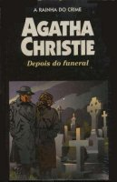

Depois do Funeral
After the Funeral
Considerada desequilibrada e tola pelos parentes. Cora Albernethie tem o estranho costume de sempre acertar em seus inusitados palpites. Se este “hábito” muitas vezes lhe traz pequenos problemas e inimizades, um dia ocorre o pior: ela acaba tendo que enfrentar a própria família quando decide afirmar, após o enterro de seu irmão Richard, que ele foi assassinado. Todas as evidências estão contra esta nova “intuição” de Cora, mas o incansável detetive Hercule Poirot sabe que os fatos mais evidentes podem às vezes funcionar como uma cortina de fumaça, por trás da qual a verdade costuma se esconder.
Felipe Eduardo: Simplesmente o melhor livro que já li até hoje. A estória é ótima, os personagens também, e novamente Poirot dá um show. Com suas células cinzentas, ele desvendou um mistério que nem a própria Scotland Yard foi capaz de elucidar.